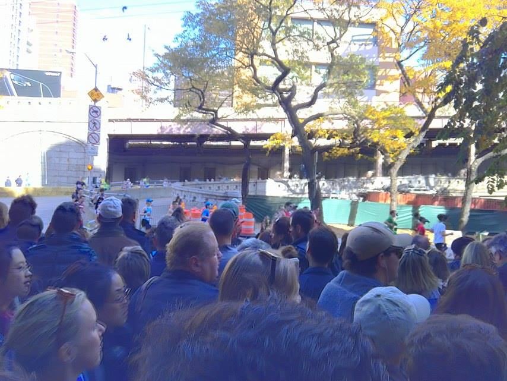

Runners without borders
International Participants at the NYC Marathon
(2016. nov 9.)
It is Sunday, November 6, near midday between 61st street and Queensboro bridge. A sizeable chunk of the marathon-runners enter Manhattan through the bridge, sweaty, exhausted, but ever so cheerful. Some runners make wide gestures to the spectators, causing them to cheer even louder. The runners just now enter the section of the race called Thunder Alley, where they are on the home stretch till the end. The sidewalks are filled with people, it is even hard to move. A pizza delivery man tries to push his bike through the crowd, excusing himself with every inch he proceeds. Through the loud, monotonous noise of the crowd, some voices stand out. There are many people cheering in many foreign languages, showing how much of an international fame and appeal the New York Marathon has.
“This is the fifteenth marathon of my husband,” says Cynthia Cajjia (38) from the Philippines. “He asked to marry me in Prague ten years ago. After I said yes, he went to run the Berlin marathon.”
The Cajjias are among the people who travelled to NYC just for the marathon. In order to make these travels easier for the participants, there are “Marathon Packages” offered through International Travel Partners in select countries. Such a package includes flights to and from New York City, as well as accommodation for the time being.
Paul Fieldhouse (61) from England arrived to the city three days ago and he is now cheering for his wife, Sharon (60). Mr Fieldhouse is standing on the back of the sidewalk, and tries to search for his wife above the army of heads and banners in front of him.
“She is not that fast, but she should be coming through any time now” he says. Sharon has been training in her local running club in England for month, and has come to NYC to run her first ever marathon.
Besides individual endeavours, huger, organized travels for runners are not uncommon either. Krooder Sports from the Netherlands has brought 84 people to run in the race, as well as a hundred spectators to keep them in spirit. Their spectator group can be easily recognized by the matching orange T-shirts and the huge flags and banners with the organization’s logo.
“We have two experienced runners in the front,” Michel Dewit, a member of the organization says “The rest of them are amateurs running their first marathon, they are very far behind.”
The huge international presence in the race adds a strong sense of diversity to it, and also sheds a light on the very nature of the event, and the spirit that encompasses all participants, runners and spectators alike.
“Nowadays American society is really at odds with itself,” says Meghan (33), a first-time volunteer, while taking a cigarette break from her duties. “It is really inspiring to see something that can really bring people together regardless of race, religion, or nationality.”
Instagram Go Back
Go Back